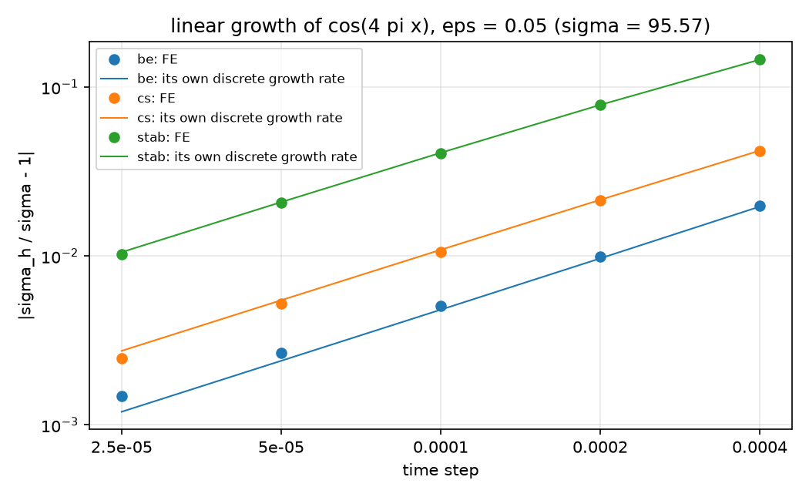
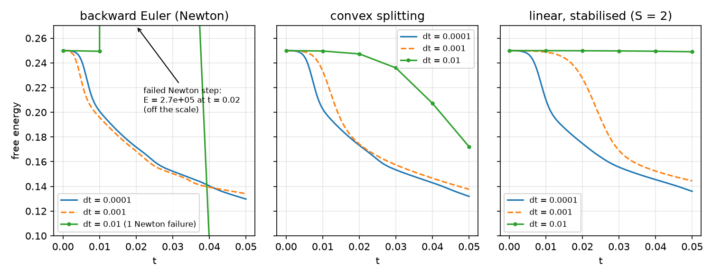
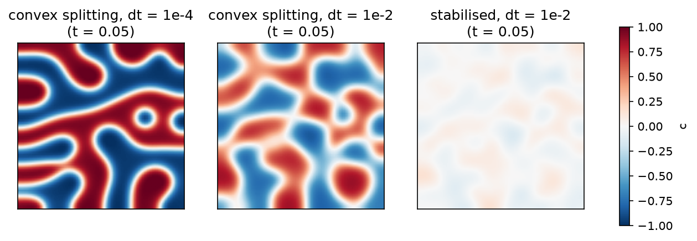
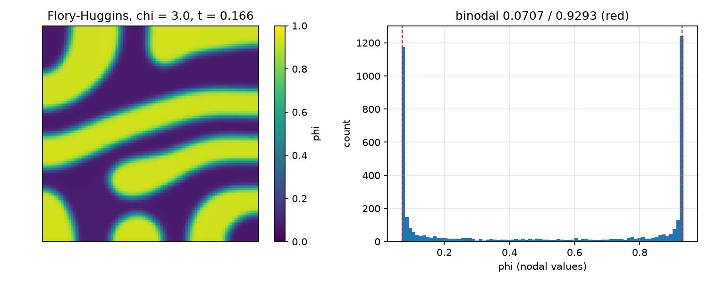
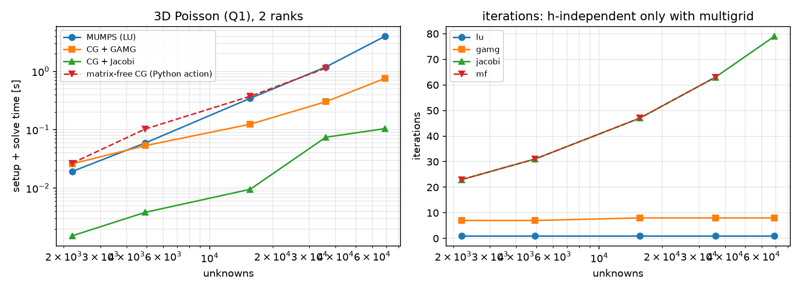
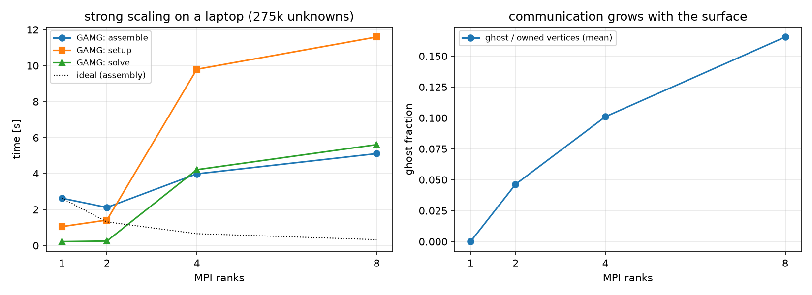
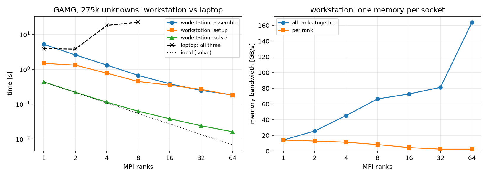
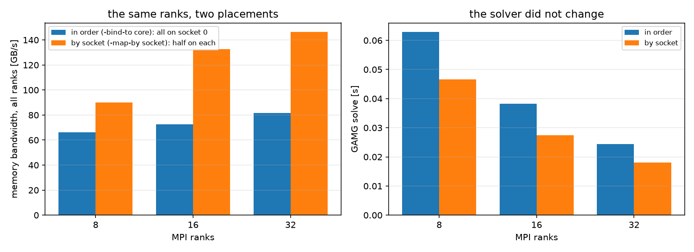

AI-based Materials and Process Simulation II
Week 14 — Phase Separation and Parallel Performance: Energy-Stable Cahn–Hilliard, Flory–Huggins, Solvers, Communication
Process Systems Laboratory
Department of Chemical and Biomolecular Engineering, SeoulTech
Today
| Part | Topic | Time |
|---|---|---|
| Quiz on Week 13 (closed-AI) | 10 min | |
| A | Cahn–Hilliard extended — linear stability, three schemes, large steps, the interface | 35 min |
| B | Flory–Huggins — binodal, spinodal, a logarithmic free energy | 15 min |
| C | Parallel performance — where the time goes, solvers, ghosts, scaling, reuse | 40 min |
| D | LLM pitfalls · HW13 | 10 min |
Lab: W14_lab.ipynb (≈ 80 min) · Homework: W14_HW13.ipynb (due before Week 15) · Applications: spinodal decomposition in alloys and polymer blends, membrane formation by phase inversion, emulsions (AMPS I Week 10: Cahn–Hilliard with the θ-method, energy and mass — this week the schemes, the checks with a known answer, and the cost)
Part A · Cahn–Hilliard extended
The model
c_t=\nabla\cdot(M\nabla\mu),\qquad\mu=f'(c)-\varepsilon^2\Delta c,\qquad E(c)=\int_\Omega f(c)+\frac{\varepsilon^2}{2}|\nabla c|^2\,dx,\qquad f=\tfrac14(c^2-1)^2 .
- No-flux walls: mass \int c conserved, \frac{dE}{dt}=-\int M|\nabla\mu|^2\le0.
- Mixed P1 × P1 for (c,\mu); nonlinear through f'(c)=c^3-c.
- Two time scales: fast spinodal growth (\sigma_{\max}=M/(4\varepsilon^2)), then slow coarsening (\ell\sim t^{1/3}) — the reason one wants large time steps.
Linear stability: a known answer
About c_0=0 a mode \cos kx grows like e^{\sigma t}:
\sigma(k)=Mk^2\big(1-\varepsilon^2k^2\big),\qquad k_{\max}=\frac1{\sqrt2\,\varepsilon},\qquad\sigma_{\max}=\frac{M}{4\varepsilon^2}.
Each time scheme multiplies the mode by its own factor g per step (a=\Delta tMk^2, b=\varepsilon^2k^2):
| scheme | \mu^{n+1} | g |
|---|---|---|
| backward Euler (BE) | f'(c^{n+1})-\varepsilon^2\Delta c^{n+1} | 1/(1-\Delta t\sigma) |
| convex splitting (CS) | (c^{n+1})^3-c^n-\varepsilon^2\Delta c^{n+1} | (1+a)/(1+ab) |
| linear stabilized (S) | f'(c^n)+S(c^{n+1}-c^n)-\varepsilon^2\Delta c^{n+1} | (1+a(1+S))/(1+a(S+b)) |
A code is verified when it reproduces its own g; the scheme is accurate when g\approx e^{\sigma\Delta t}.
Each scheme against its own prediction

Strip 128\times2, \varepsilon=0.05, k=4\pi (\sigma=95.57). Every scheme is first order in \Delta t; the FE rate sits on its own discrete rate to 0.03 %. Stabilization costs accuracy: -4 % at \Delta t=10^{-4} (BE +0.5 %, CS −1.1 %).
The last 0.03 %: the mesh’s wavenumber
- On a uniform P1/Q1 mesh \cos kx is an eigenvector of the mass and stiffness matrices, with k_h^2=\frac{6}{h^2}\frac{1-\cos kh}{2+\cos kh}=k^2\big(1-\frac{(kh)^2}{12}+\dots\big) instead of k^2.
- Per step, the FE factor differs from g(k) by 1.0\times10^{-5}, 2.5\times10^{-6}, 6.3\times10^{-7} (64, 128, 256 cells: second order) — and from g(k_h) by at most 6.3\times10^{-9} for all schemes and steps.
- What is left is the cubic term the linear analysis drops: an initial amplitude 10^{-5} instead of 10^{-4} reduces it from 1.3\times10^{-9} to 1.3\times10^{-11} — the factor 100 of a term in (amplitude)².
- Code, scheme and spatial discretization are separated exactly: every part of the error has a formula.
Three schemes, three properties
| BE | CS (Eyre) | stabilized | |
|---|---|---|---|
| system | nonlinear (Newton) | nonlinear (Newton) | linear |
| solvable for every \Delta t | no (\Delta t\sigma<1) | yes | yes |
| energy decreases for every \Delta t | no | yes (proof: HW13 Q1) | yes for S\ge\frac12\max|f''| |
| matrix | changes every iteration | changes every iteration | constant — factorize once |
| growth error at \Delta t=10^{-4} | +0.5 % | −1.1 % | −4.1 % |
Large time steps: the energy

Green: \Delta t=10^{-2} — BE leaves the scale after a failed Newton step, CS lags, the stabilized scheme hardly moves.
Large time steps: the field at t=0.05

Large time steps: what the figures say
64\times64, \varepsilon=0.02; reference E(0.05)=0.12970 (BE, \Delta t=10^{-4}). The reference itself, checked: \Delta t=5\times10^{-5}, 2.5\times10^{-5} give 0.12981, 0.12987 (order 1.0), extrapolated 0.12993 — the reference is 0.17 % off in time. The mesh matters more: 32^2 / 128^2 give 0.13223 / 0.12902 (about 0.5 % at 64^2). All runs below share the mesh: they compare the time schemes only.
| \Delta t | BE | CS | stabilized |
|---|---|---|---|
| 10^{-3} | 0.13407 | 0.13765 | 0.14442 |
| 10^{-2} | 1 Newton failure, E\to2.7\times10^5, ends at 0.0793 | 0.17215, monotone | 0.24899 — frozen, monotone |
- BE fails loudly — if the reason is checked. Unchecked, the loop continues from garbage and ends below the reference.
- CS and the stabilized scheme fail quietly: energy stability guarantees that nothing blows up, not that anything is right.
- Use large steps where the dynamics are slow (late coarsening), with an adaptive \Delta t, and measure the accuracy separately.
The equilibrium interface
A 1D interface relaxes to c=\tanh\frac{x}{\sqrt2\varepsilon} with interfacial energy \gamma=\frac{2\sqrt2}{3}\varepsilon — a second known answer.
Started twice as wide; convex splitting, \Delta t=10^{-3} to t=0.4, then 10^{-2} to t=2:
| cells on [-1,1] (\varepsilon=0.05) | 50 | 100 | 200 | 400 |
|---|---|---|---|---|
| cells per \sqrt2\varepsilon | 1.8 | 3.5 | 7.1 | 14 |
| profile error (nodes), t=0.4 | 5.1e-3 | 2.8e-3 | 2.8e-3 | 2.8e-3 |
| profile error (nodes), t=2 | 5.7e-3 | 1.5e-3 | 3.8e-4 | 9.4e-5 |
| \gamma error, t=2 | +1.04 % | +0.27 % | +0.067 % | +0.017 % |
- At t=0.4 the profile error does not fall with the mesh: not a discretization error — the interface is still relaxing (diffusion through the bulk is slow). Relaxed (t=2; to t=10 nothing changes), profile and \gamma are second order (2.0).
- A test against an equilibrium needs the equilibrium. 64\times64 at \varepsilon=0.02 has 1.8 cells per interface width: fine for the pattern, 1 % in the interfacial energy.
Part B · Flory–Huggins
A logarithmic free energy
Polymer blends and solutions (volume fraction \phi, lattice units):
f(\phi)=\frac{\phi}{N_1}\ln\phi+\frac{1-\phi}{N_2}\ln(1-\phi)+\chi\,\phi(1-\phi).
- Symmetric (N_1=N_2=1): binodal \ln\frac{\phi}{1-\phi}+\chi(1-2\phi)=0, spinodal \phi(1-\phi)=\frac1{2\chi}, separation for \chi>2. \chi=3: binodal 0.0707 / 0.9293.
- f' is singular at 0 and 1: every iterate must stay inside (0,1).
- Convex splitting: the logarithms implicit (convex), \chi\phi(1-\phi) explicit (concave).
Flory–Huggins: the separated blend

\chi=3, 64\times64, \Delta t ramped 10^{-5}\to10^{-3}, t=0.166: the composition of each phase — the maximum of a smoothed density of the nodal \phi (Gaussian kernel, width 10^{-3}; a histogram peak moves by \sim10^{-3} with the bins) — is 0.0720 / 0.9294 against the binodal 0.0707 / 0.9293; 28 % / 43 % of the nodes lie within 0.002 of it (65 % / 78 % at t=1.5, textbook). Mass drift 1\times10^{-15}. Single nodes overshoot (0.0684 / 0.9337: no maximum principle, small curved domains) — extremes or percentiles of the nodal values are a poor test.
One step of \Delta t=10^{-3} from the start: BE reason −4 after 2 iterations, CS converges in 2. The first two BE iterates stay in [0.18, 0.84]; the third Newton update overshoots to [-2.26, 3.87] — 1877 of 4225 nodes outside (0,1), the logarithm is NaN.
Part C · Parallel performance
Where the time goes
A solve has three parts with different costs and different parallel behavior:
| part | cost | parallel |
|---|---|---|
| assembly | O(n), local per cell | ideal (no communication but the ghost update) |
| preconditioner setup | LU: O(n^{1.5\ldots2}) in 3D; AMG: O(n) with a large constant | LU poorly, AMG reasonably |
| solve | LU: triangular solves; Krylov: iterations × (product + reductions) | Krylov: one neighbor exchange and global reductions per iteration |
- The first call includes the JIT compilation of the forms (seconds): warm up before timing.
- Time with
comm.Barrier(); MPI.Wtime()and report the maximum over ranks.
Four solvers for one problem

Four solvers: what the figure says
Setup + solve time (iterations), 2 ranks:
| N (unknowns) | MUMPS LU | CG + GAMG | CG + Jacobi | matrix-free CG |
|---|---|---|---|---|
| 12 (2197) | 0.019 s (1) | 0.026 s (7) | 0.002 s (23) | 0.027 s (23) |
| 16 (4913) | 0.059 s (1) | 0.053 s (7) | 0.004 s (31) | 0.103 s (31) |
| 24 (15625) | 0.345 s (1) | 0.124 s (8) | 0.010 s (47) | 0.374 s (47) |
| 32 (35937) | 1.186 s (1) | 0.302 s (8) | 0.074 s (63) | 1.134 s (63) |
| 40 (68921) | 3.982 s (1) | 0.757 s (8) | 0.104 s (79) | — |
- Iterations: Jacobi and matrix-free CG grow like N\propto h^{-1} (condition number h^{-2}), GAMG stays at 7–8, LU is exact. On these sizes Jacobi is still the fastest — multigrid wins as n grows.
- Matrix-free CG stores no matrix (0 against 1.8\times10^6 nonzeros at N=40) but assembles the action of the form in Python at every iteration: slow here. Production matrix-free codes use compiled, sum-factorized kernels (high order).
- Uniform hexahedra and f\propto a product of sines: the right-hand side is an eigenvector of the discrete operator and CG converges in one iteration — a benchmark that measures nothing.
Communication: ghosts and neighbors
N=64 (275 k unknowns), vertices per rank:
| ranks | owned vertices | ghost vertices | ghost / owned | neighbors |
|---|---|---|---|---|
| 1 | 274625 | 0 | 0.000 | 0 |
| 2 | 137312 | 6356 | 0.046 | 1 |
| 4 | 68656 | 6931 | 0.101 | 3 |
| 8 | 34328 | 5676 | 0.165 | 7 |
- Each matrix–vector product exchanges the ghost values with the neighbors; each inner product is a global reduction.
- Ghost fraction \propto surface/volume \sim p^{1/3}/N: it grows with the rank count and falls with the problem size — keep \gtrsim10^4–10^5 unknowns per rank.
Strong scaling on a laptop

Scaling: what the measurement says
Laptop, N=64 (275 k unknowns), OMP_NUM_THREADS=1:
| ranks | GAMG: assembly / setup / solve [s] | LU (N=40): setup [s] | Jacobi: solve [s] | GAMG its |
|---|---|---|---|---|
| 1 | 2.63 / 1.06 / 0.22 | 2.66 | 0.56 | 8 |
| 2 | 2.12 / 1.42 / 0.25 | 3.48 | 0.58 | 8 |
| 4 | 3.99 / 9.80 / 4.22 | 16.26 | 5.72 | 8 |
| 8 | 5.11 / 11.59 / 5.61 | 30.09 | 5.14 | 8 |
- The iterations do not change with the rank count (GAMG 8, Jacobi 127): the algorithm scales; the machine does not.
- This laptop (Apple M1: 4 performance + 4 efficiency cores, fanless, MPICH over shared memory) is slower with 4 and 8 ranks than with 1–2. We measured that ranks launched by
mpirunran about 2× slower each already at 4 ranks even for pure Python loops — the slowdown comes from the machine and its MPI launch, before any DOLFINx code runs. - Colab gives 2 virtual CPUs. The same script on a two-socket workstation: next slides — measure, don’t assume.
Strong scaling on a workstation

Workstation: what the measurement says
2 × Intel Xeon Gold 6430 (2 sockets × 32 cores, one memory per socket), each rank pinned to a core (mpirun -bind-to core), OMP_NUM_THREADS=1, same script and problem:
| ranks | GAMG: assembly / setup / solve [s] | LU (N=40): setup [s] | Jacobi: solve [s] | GAMG / Jacobi its |
|---|---|---|---|---|
| 1 | 5.17 / 1.48 / 0.432 | 2.44 | 1.045 | 8 / 127 |
| 4 | 1.32 / 0.774 / 0.114 | 2.35 | 0.264 | 8 / 127 |
| 16 | 0.383 / 0.350 / 0.038 | 1.36 | 0.087 | 8 / 127 |
| 64 | 0.185 / 0.179 / 0.016 | 1.33 | 0.031 | 8 / 127 |
- Same iterations; now the machine scales too: from 1 to 64 ranks the GAMG solve is 27×, assembly 28×, Jacobi 34× faster — but the GAMG setup only 8×, the LU setup 1.8×, and at 64 ranks each rank owns only 4,300 unknowns.
- One workstation core is not faster than the laptop’s. The memory is the limit: 14 GB/s for one rank; all ranks together 66 GB/s at 8, 81 at 32, 164 at 64 — the jump at 64 is the second socket’s memory.
The same ranks, two placements

Placement: what the measurement says
- Each rank recorded its CPUs and NUMA node:
-bind-to corefills the cores in order — all 32 ranks on socket 0;-map-by socketputs 16 + 16. - Same 32 ranks: memory bandwidth 82 → 146 GB/s, GAMG solve 0.024 → 0.018 s (26 % faster); 16 ranks: 72 → 132 GB/s, 28 % faster.
- Nothing in the solver changed, only where its ranks run. A scaling claim needs the machine, the placement and a measurement.
Reuse one factorization
The stabilized scheme’s matrix is constant: assemble and factorize it once, then every step is a right-hand side and two triangular solves.
| per step, 2 ranks | 64 imes64 | 128 imes128 |
|---|---|---|
| backward Euler (Newton) | 72.4 ms | 264.1 ms |
| stabilized, Newton | 44.2 ms | 117.3 ms |
| stabilized, linear, re-factorized | 39.6 ms | 110.1 ms |
| stabilized, one factorization | 8.8 ms | 16.4 ms |
Same energy to all printed digits for the three stabilized variants. Backward Euler cannot reuse anything: its Jacobian contains 3c^2. Cost per unit of simulated time = (time per step)/\Delta t — weigh it against the accuracy per step (HW13 Q6).
Math → DOLFINx 0.11
| Task | Code |
|---|---|
| mixed (c,\mu) | W = functionspace(msh, basix.ufl.mixed_element([P1, P1])); V0, dofs = W.sub(0).collapse() — dofs is a list with one array |
| initial field | cf.interpolate(lambda x: ...) (a function of the coordinates: the same on every partition) |
| constant matrix | A = assemble_matrix(form(a)); A.assemble(); ksp.setOperators(A) once; per step assemble_vector(b, form(L)), ksp.solve(b, x) |
| matrix-free operator | PETSc.Mat().createPython(sizes, Shell()), mult: assemble_vector(y, form(action(a, w))) into a ghosted vector |
| timings | comm.Barrier(); t = MPI.Wtime(); the maximum over ranks; warm up the JIT |
| ghosts | msh.topology.index_map(0).num_ghosts, .owners (neighbor ranks) |
Part D · LLM · HW13
What goes wrong in phase-field and performance studies
| Pitfall | Measured symptom (this week) |
|---|---|
| A failed Newton step not checked | E\to2.7\times10^5, the run continues and ends below the reference |
| “Energy-stable” taken for “accurate” | stabilized scheme frozen at \Delta t=10^{-2} (E 0.249 vs 0.130) |
len(dofs) with dofs from collapse() |
1: a “random” start that is one constant — nothing happens |
| A log free energy with fully implicit Newton | an iterate outside (0,1): NaN, reason −4 |
| A profile compared with the equilibrium before it has relaxed | an error that does not fall with the mesh (2.8e-3 on 100–400 cells) |
| Phases judged by nodal extremes or percentiles | overshoot beyond the binodal (0.0684 / 0.9337) — use the maximum of a smoothed density |
| A sine right-hand side on a uniform mesh | CG converges in 1 iteration |
| Timing the first call | includes the JIT compilation |
| Scaling measured on a laptop | 4 ranks slower than 1 (a workstation: 27× faster at 64 ranks) |
| Ranks placed in order on a two-socket machine | one socket’s memory: 26 % slower solve at 32 ranks than spread over both |
HW13 (due before Week 15)
Theory (linear stability, amplification factors, convex splitting, the common tangent) · growth rates in time and space · the tanh interface · Flory–Huggins binodal and a failing Newton step · solvers, memory and ghosts · accuracy per cost · an LLM-generated Cahn–Hilliard script with defects. About seven minutes locally, 25 on Colab.
Summary
| Concept | Key point | DOLFINx 0.11 |
|---|---|---|
| Known answers | linear growth rate (each scheme’s own g), tanh interface, binodal | mode(k), tanh_profile, fh_binodal |
| Schemes | BE (accurate, conditionally solvable), CS (stable), stabilized (stable, linear) | scheme="be" / "cs" / "stab" |
| Stability ≠ accuracy | large steps: stable, failing or frozen | check the reason, compare with a reference |
| Cost | assembly / setup / solve; JIT; maxima over ranks | MPI.Wtime, Barrier |
| Solvers | LU \to AMG as n grows; Jacobi iterations \propto h^{-1} | pc_type: lu, gamg, jacobi; createPython |
| Parallel | ghosts \sim surface/volume; iterations independent of ranks | index_map.num_ghosts, .owners |
| Reuse | constant matrix → factorize once | assemble_matrix once, ksp.solve per step |
Next week: project workshop — individual code reviews and 5-minute progress presentations.